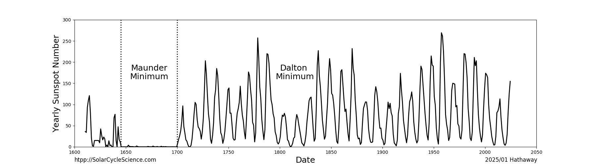
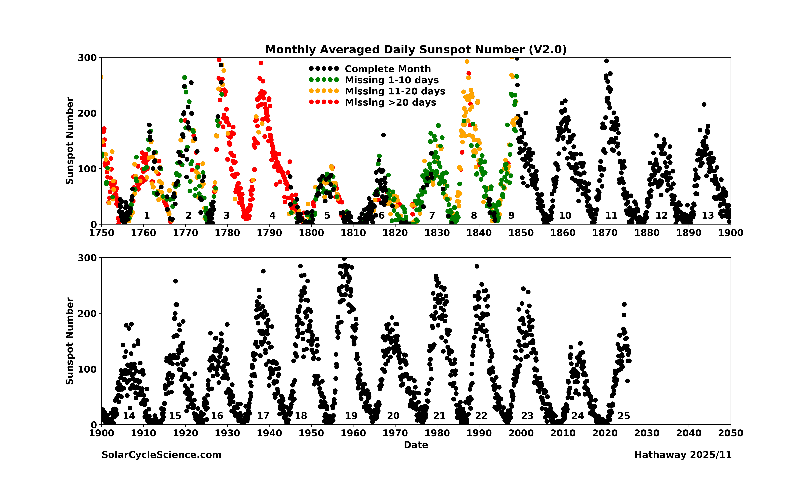
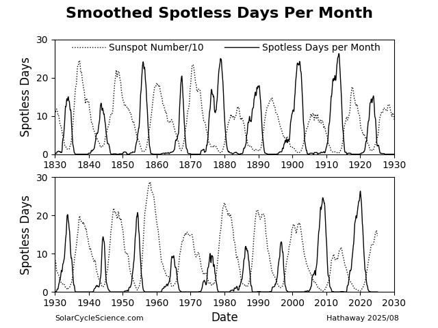
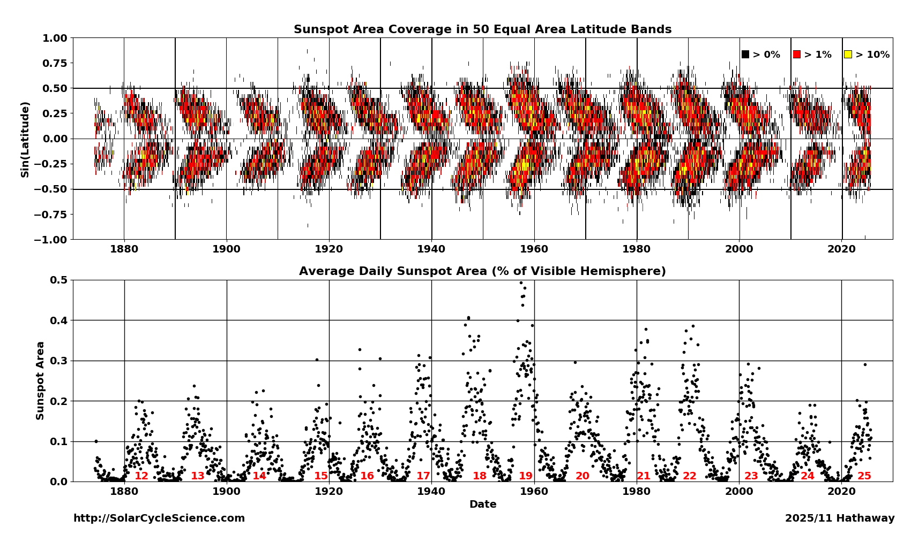
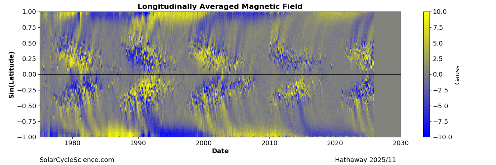
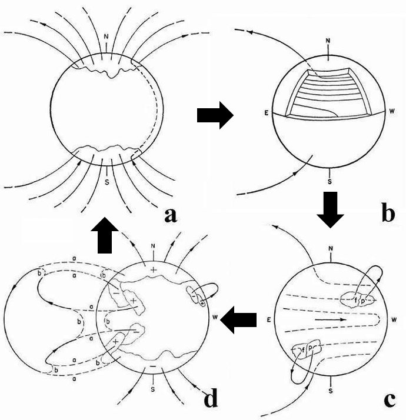

In the 1800s astronomers realized that the appearance of sunspots was cyclic, with a period averaging about 11 years. As new features of the Sun (solar flares, filaments, prominences, coronal loops and coronal mass ejections) were discovered, it was found that they too varied along with the frequency of sunspots. The sunspot number is now commonly accepted as a measure of solar activity. Solar activity itself has been linked to satellite failures, electrical power outages, and variations in Earths climate. The impact of solar activity on Earth and our technology has created a need for a better understanding of, and the ability to predict, solar activity.
Sunspot activity over the last four hundred years has shown that the amplitude of the sunspot cycle varies from one cycle to the next. The average cycle has a peak sunspot number of about 150. At times, as in the period known as the Maunder Minimum between 1645 and 1715, solar activity can become so weak that it seems to disappear for several decades at a time.

Sunspot Cycles - Yearly Averaged Sunspot Number (V2.0). The amplitude of the sunspot cycles from 1600 to present varies substantially. This includes the MaunderMinimum, a period from 1645 to 1700 when the magnetic fields were too weak to produce sunspots.

Monthly Averaged Sunspot Numbers. This shows monthly averaged sunspot numbers since 1750. Color indicates the number of missing days in each monthly average, with the black dot representing complete months.

Spotless Days per Month (smoothed). This shows the other side of the sunspot cycle - cycle minima as measured by the number of days each month without any sunspots. The peaks in the number of spotless days occur at about the time of sunspot cycle minima.
Butterfly Diagrams illustrate how the distribution of sunspots and magnetic flux are distributed on the Sun and how they change over time. Sunspots appear in bands on either side of the equator. Cycles typically overlap by 2-3 years. At the beginning of each cycle, the active regions emerge at latitudes of about 30 degrees [Sin(Latitude)=0.50]. As the cycle progresses, the active regions emerge closer and closer to the equator, an effect known as Sporer’s Law. Cancellation of magnetic polarity at each latitude and across the equator leaves behind an excess of following polarity that is transported to the poles. The north and south poles have opposite polarities that reverse from cycle to cycle. The timing of this polar field reversal is near the time of the solar cycle maximum.

Sunspot Area Butterfly Diagram. This shows the distribution of sunspot area as a function of latitude since 1874.The data plotted in the Butterfly Diagram is contained in an ASCII text file with a single record containing the Carrington rotation number followed by five records containing 10 values each of the total sunspot area (in units of millionths of a hemisphere) found in 50 latitude bins distributed uniformly in Sine(latitude).

Magnetic Butterfly Diagram. This shows the distribution of the surface magnetic field (longitudinally averaged) over the last four solar cycles. The poles have opposite polarities that switch from one cycle to the next near the time of solar maximum. The data plotted in the Butterfly Diagram is contained in a fits file with values for each latitude bin for each Carrington rotation.
Obtaining a good understanding of the solar cycle and its variability is the oldest and most significant problem in solar physics. H.W. Babcock (1961) proposed the first complete (phenomenological rather than numerical) Dynamo Model to explain the magnetic properties that were observed on the Sun. This model progresses in four stages:
Solar Minimum. An axisymmetric dipole (poloidal) field exists. Field lines emerge at high latitudes and thread through the convection zone to the opposite hemisphere.
Differential Rotation causes the submerged magnetic field to stretch in the toroidal direction (wrapping around the Sun). The field is strengthened by this stretching.
The toroidal field become buoyant and causes sunspots to emerge with Joy’s Tilt and Hale’s Polarity (polarity of leading spots matches the polarity of the polar field at minimum).
Magnetic flux is shredded off of the sunspots. The leading polarity fields cancel across the equator. The surface flows transport the following polarity to the poles. The following polarity cancels the old polar field and creates a new poloidal field with opposite polarity.

While Babcock’s model is widely accepted as the underlying mechanism behind the solar cycle, the finer details are still not well understood. Given this (and many more recent dynamo models), most solar physicists agree that the polar fields at solar minimum are the seeds to the next solar cycle.
 Solar Cycle Science Discover the Sun!
Solar Cycle Science Discover the Sun!